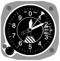

altimeter

Definition: An altimeter or an altitude meter is an instrument used to measure the altitude of an object above a fixed level. The measurement of altitude is called altimetry, which is related to the term bathymetry, the measurement of depth under water. The most common unit for altimeter calibration worldwide is hectopascals (hPa), except for North America (other than Canada
Source: Wikipedia
Wikipedia Page
Wikidata Page